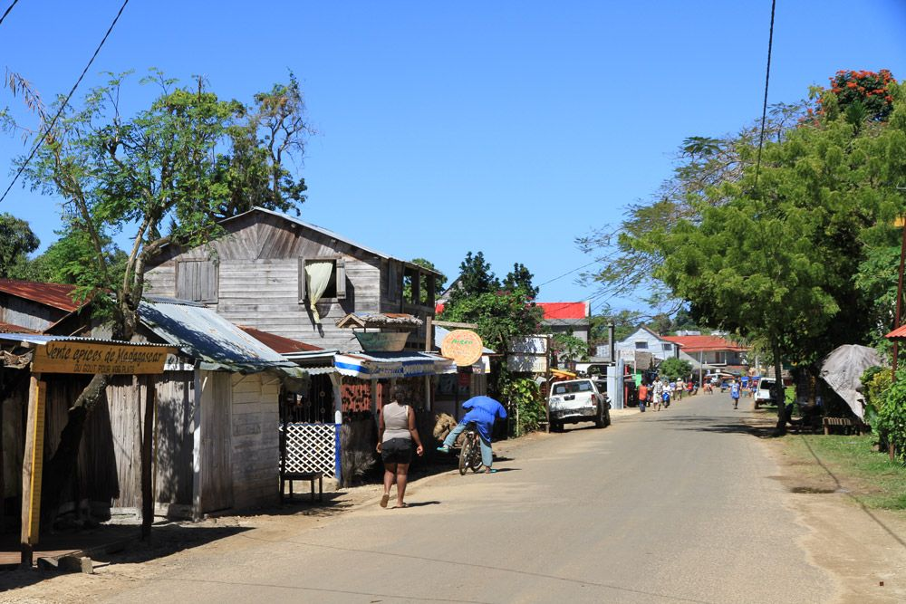

Madagaskar einmal quer – MG119
Madagaskar von Baobabs über das Hochland zu Palmenstränden erleben
 Diese facettenreiche Reise führt uns in 14 Tagen einmal diagonal durch Madagaskar, von den Baobab-Bäumen im fruchtbaren warmen Nordwesten Madagaskars über das wellige weite madagassische Hochland mit seinen Reisfeldern sowie roten Laterithäusern hinunter an die üppig-grüne Ostküste sowie weiter auf die idyllische Tropeninsel Ste. Marie mit palmengesäumten Stränden.
Diese facettenreiche Reise führt uns in 14 Tagen einmal diagonal durch Madagaskar, von den Baobab-Bäumen im fruchtbaren warmen Nordwesten Madagaskars über das wellige weite madagassische Hochland mit seinen Reisfeldern sowie roten Laterithäusern hinunter an die üppig-grüne Ostküste sowie weiter auf die idyllische Tropeninsel Ste. Marie mit palmengesäumten Stränden.

- Madagaskars West- sowie Ostküste
- Vielseitige Nationalparks
- Tropeninsel Ste. Marie
Unser Vorschlag für das Reiseprogramm
Selbstverständlich ist dieser Madagaskar-Reise-Vorschlag nach Ihren Wünschen adaptierbar sowie mit weiteren Routen kombinierbar. Jede Reise wird in enger Absprache mit Ihnen geplant sowie organisiert. Kontaktieren Sie uns jederzeit für weitere Infos, zur Reiseplanung sowie bei Fragen rund um Madagaskar.